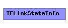

File: Network/TED/TED.msg
Represents a link in the TED and in LinkStateMsg packets.
The following diagram shows part of the inheritance hierarchy. Unresolved types are missing from the diagram. Click here to see the full picture.
| Name | Type | Description |
|---|---|---|
| advrouter | IPAddress | routerId of originator of this link state entry |
| linkid | IPAddress | identifies link within advrouter; set to peer's address |
| local | IPAddress | address of local interface of this link |
| remote | IPAddress | address of "gateway" to peer |
| metric | double | link metric |
| MaxBandwidth | double | maximum bandwidth (bps) |
| UnResvBandwidth | double[8] | unreserved bandwidths --FIXME indexed by what? |
| timestamp | double | time of originating this entry |
| sourceId | unsigned int | FIXME looks like this is the same as advrouter -- really needed? |
| messageId | unsigned int | id assigned to originating LinkStateMsg (FIXME or?) |
| state | bool | false = down, true = up |
struct TELinkStateInfo { fields: IPAddress advrouter; // routerId of originator of this link state entry IPAddress linkid; // identifies link within advrouter; set to peer's address IPAddress local; // address of local interface of this link IPAddress remote; // address of "gateway" to peer double metric; // link metric double MaxBandwidth; // maximum bandwidth (bps) double UnResvBandwidth[8]; // unreserved bandwidths --FIXME indexed by what? double timestamp; // time of originating this entry unsigned int sourceId; // FIXME looks like this is the same as advrouter -- really needed? unsigned int messageId; // id assigned to originating LinkStateMsg (FIXME or?) bool state; // false = down, true = up };